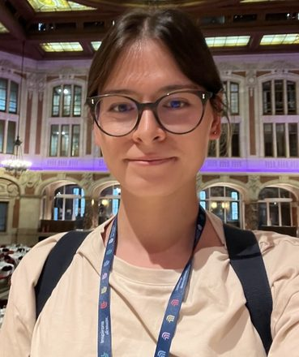

I am a postdoctoral researcher in the Inria TAU team and Université Paris-Saclay, working on reinforcement learning and growing neural networks.
My research focuses on policy optimisation, adaptive neural architectures that grow their capacity over training, and preference-based learning.
Ex-physicist; previously working on gravity and black holes.
Email: firstname.lastname@inria.fr
Open position: Inria TAU is offering an internship, leading to a fully funded three-year PhD. The topic is connections between reinforcement learning and continual learning. See here for more details.
StaQ: a Finite Memory Approach to Discrete Action Policy Mirror Descent
Reinforcement Learning Conference (RLC), 2026
PB²: Preference Space Exploration via Population-Based Methods in Preference-Based Reinforcement Learning
Reinforcement Learning Conference (RLC), 2026
Tackling brain signal inter-subject variability with adaptive neural architectures
International Joint Conference on Neural Networks (IJCNN), 2026
Is Deep RL Reproducible? State of the art and new tools
EWRL, 2026
Strong Cosmic Censorship in Kerr–Newman–de Sitter
Journal of High Energy Physics, 2024
Scalar QNM spectra of Kerr and Reissner–Nordström revealed by eigenvalue repulsions in Kerr–Newman
Journal of High Energy Physics, 2023
Strong Cosmic Censorship and eigenvalue repulsions for rotating de Sitter black holes in higher dimensions
Journal of High Energy Physics, 2022
Phase diagram of the charged black hole bomb system
Journal of High Energy Physics, 2021
Fully constrained, high-resolution shock-capturing formulation of the Einstein–fluid equations in 2+1 dimensions
Physical Review D, 2021
GroMo: growing modules for PyTorch
Zenodo · Version 0.1.0, 2026
Minari
Zenodo · Version 0.5.0, 2024